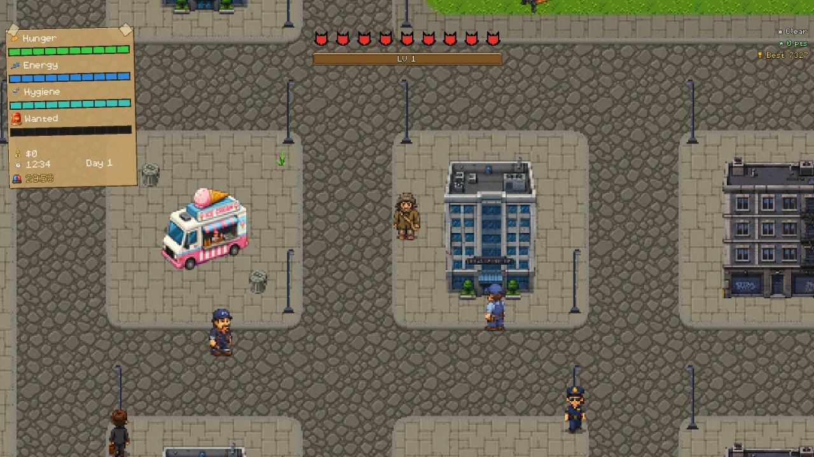
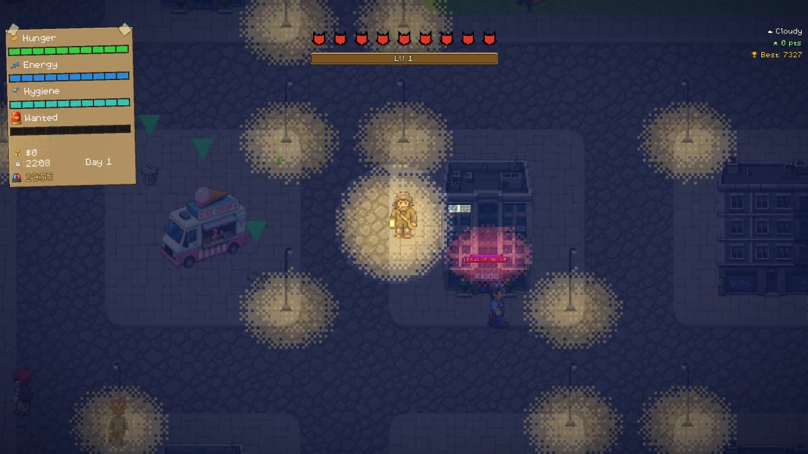
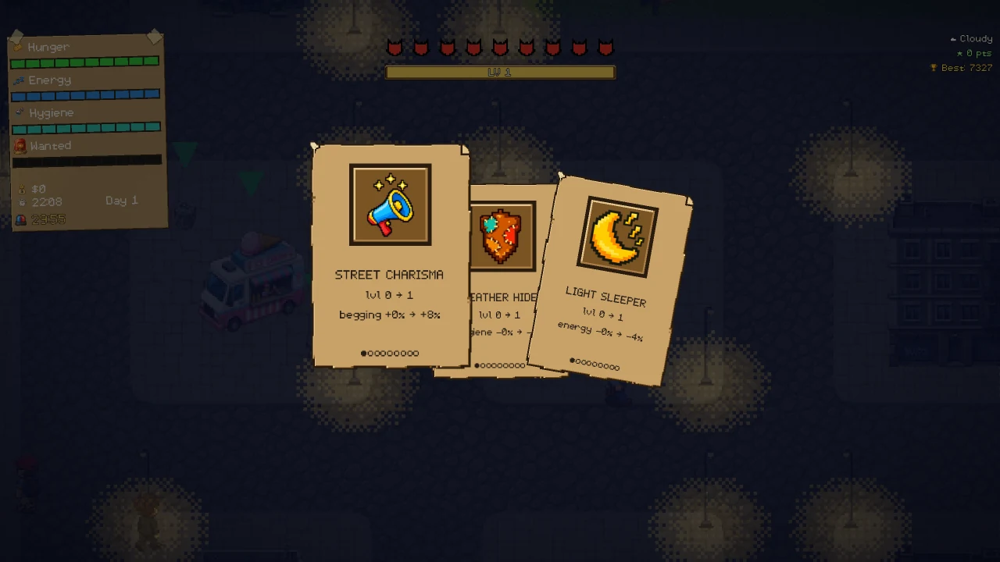
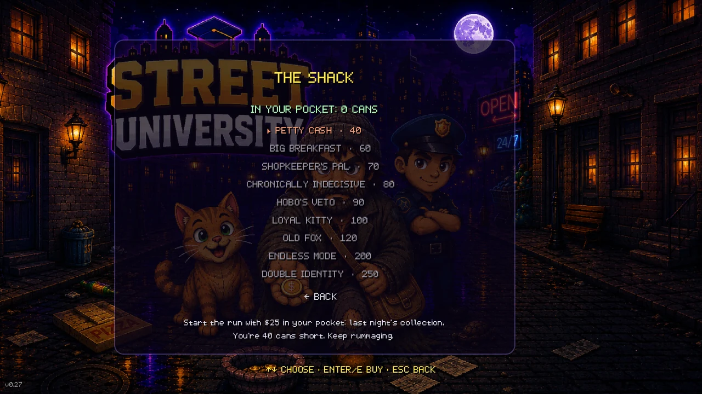
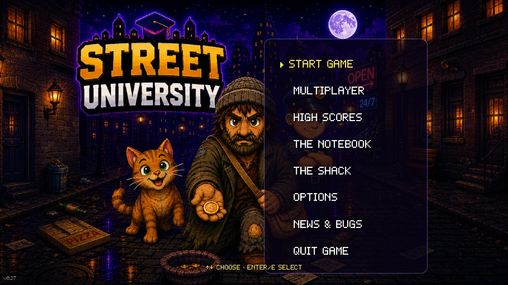

The game
Street University is a cartoon survival roguelike about three very bad days, played entirely for laughs. You are homeless in a city that would rather you weren't, you have thirty minutes, and a cat.
The run
Thirty real minutes are three days on the street. Beg at the traffic lights, busk with a kazoo, dig through bins, nap on a bench, wash in a public toilet, and watch hunger, energy and hygiene drain while you do it. Every dawn the city gets meaner: more police, higher prices, stingier passers-by, and absurd daily events like the bin men's strike or the mayor's visit.
At minute thirty, the big raid arrives. It always does. A clearance squad faster than you floods the streets, and every run ends the same way. The only questions are how long you last and what you scored.
Cards and superpowers
Living on the street is how you level up: begging, busking, bin-diving, sleeping and knocking people over with cats all earn experience. Every level deals you three upgrade cards — iron stomach, street charisma, rubber soles, sixth sense and more. Push one all the way and a juggler drops into town to pelt you with pins; take him down, grab the golden card, and your upgrade is crowned an active superpower with its own recharge.
Between runs
Your score turns into cans, and cans buy permanent upgrades at the shack: a starting float, a bottomless appetite, a shopkeeper's discount, a card reroll, a veto, a loyal cat already in your arms. Feats unlock new cards, new superpowers, new characters and endless mode, where the raid is not the end but the start: waves of manhunt and truce, thicker every time, until they finally get you.
The city
Eight districts, from the market to the slums to the hill, and a subway to move between them. Real weather with heat and cold waves, day and night, cats to pick up and throw, and a cast of street villains after your corner: the bin man, the cat lady, the junkie, the night gang, and a rival tramp who will chase you across town for fifteen dollars.
What you will not find
No ads
Not one, anywhere in the game.
No in-app purchases
Nothing to buy inside the game.
No account to create
Solo play works completely offline.
No data selling
Saves and settings stay on your device.
Hand-drawn pixel art, a soundtrack you can leave on, and eight languages: English, Italian, French, Spanish, German, Russian, Simplified Chinese and Brazilian Portuguese.
Nobody dies in Street University. You collapse, you get nicked, you lose your ninth life like a cat — and then you go again, because this time you know where the good bins are.
Platforms
- Windows
- macOS
- Android
- iOS
Beta
Street University is in closed beta and is not on sale yet. If you would like to try it, or if you are already a tester and something broke, write to info@streetuniversitygame.com.
Who makes it
Street University is designed, written and drawn by Ivan Bianco, an independent developer based in Italy, and published under the package name com.divano.streetuniversity. There is no studio, no publisher and no team: it is one person and a lot of cats.
Il gioco
Street University è un roguelike di sopravvivenza in stile cartone animato su tre giornate storte, e si prende sul ridere dall'inizio alla fine. Sei un senzatetto in una città che preferirebbe non vederti, hai trenta minuti e un gatto.
La partita
Trenta minuti veri sono tre giorni di strada. Chiedi l'elemosina al semaforo, suona il kazoo, fruga nei bidoni, dormi su una panchina, lavati in un bagno pubblico — e intanto fame, energia e igiene calano. A ogni alba la città diventa più cattiva: più polizia, prezzi più alti, passanti più tirchi, ed eventi del giorno assurdi come lo sciopero dei netturbini o la visita del sindaco.
Al trentesimo minuto arriva la retata. Arriva sempre. Una squadra di sgombero più veloce di te riempie le strade, e ogni partita finisce allo stesso modo. Le uniche domande sono quanto duri e quanto hai fatto.
Carte e superpoteri
Si sale di livello vivendo per strada: elemosina, musica, bidoni, sonno e gente buttata a terra a gattate danno tutti esperienza. A ogni livello ti arrivano tre carte potenziamento — stomaco di ferro, carisma da marciapiede, suole di gomma, sesto senso e altre. Portane una fino in fondo e in città piomba un giullare che ti bersaglia di birilli: stendilo, prenditi la carta d'oro, e il potenziamento diventa un superpotere attivo con la sua ricarica.
Fra una partita e l'altra
Il punteggio diventa lattine, e le lattine comprano migliorie permanenti alla baracca: un gruzzolo iniziale, un appetito senza fondo, lo sconto del negoziante, il cambio di una carta, un veto, un gatto fedele già in braccio. Le imprese sbloccano carte nuove, superpoteri nuovi, personaggi nuovi e la modalità infinita, dove la retata non è la fine ma l'inizio: ondate di caccia all'uomo e tregua, sempre più fitte, finché non ti prendono.
La città
Otto quartieri, dal mercato alle baracche alla collina, e una metropolitana per spostarsi. Meteo vero con ondate di caldo e di freddo, giorno e notte, gatti da raccogliere e da lanciare, e una compagnia di canaglie che ti vuole l'angolo: il netturbino, la gattara, il tossico, la banda della notte e un barbone rivale che ti insegue per mezza città per quindici dollari.
Cosa non ci troverai
Nessuna pubblicità
Neanche una, da nessuna parte.
Nessun acquisto in-app
Dentro al gioco non si compra niente.
Nessun account da creare
In singolo funziona del tutto offline.
Nessun dato in vendita
Salvataggi e impostazioni restano sul tuo dispositivo.
Pixel art disegnata a mano, una colonna sonora che puoi lasciare accesa, e otto lingue: italiano, inglese, francese, spagnolo, tedesco, russo, cinese semplificato e portoghese brasiliano.
In Street University non muore nessuno. Crolli, ti beccano, perdi la nona vita come un gatto — e poi ricominci, perché stavolta sai dove sono i bidoni buoni.
Piattaforme
- Windows
- macOS
- Android
- iOS
Beta
Street University è in beta chiusa e non è ancora in vendita. Se vuoi provarlo, o se sei già un tester e qualcosa si è rotto, scrivi a info@streetuniversitygame.com.
Chi lo fa
Street University è ideato, scritto e disegnato da Ivan Bianco, sviluppatore indipendente in Italia, e pubblicato col nome pacchetto com.divano.streetuniversity. Non c'è uno studio, non c'è un editore e non c'è una squadra: c'è una persona e parecchi gatti.
Screenshots




